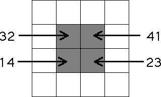
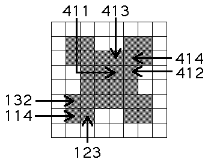

| We impose these restrictions: |
| T1 never immediately follows T4 |
| T2 never immediately follows T3 |
| T3 never immediately follows T2 |
| T4 never immediately follows T1 |
|
| What are the first few generations of the IFS with these
restrictions? |
| First, note these restrictions imply no points land in the
squares with addresses 14, 23, 32, and 41. That is, the shaded squares will contain no points. |
|  |
| Continuing on to the length 3 address squares, we see every square with
address including 14, 23, 32, and 41 will contain no points. For example, |
|  |
| Here is a movie showing the
first few iterates of the driven IFS with these restrictions. In contrast to the
diargams above, here the nonempty
regions are shaded. |
|
|
| Click to picture to start the animation. |
|